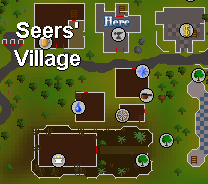
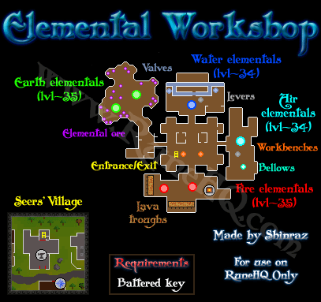
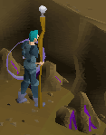
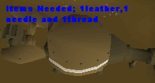
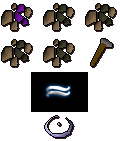

Elemental Workshop
Description: Hundreds of years ago a mineral was found that had the ability to change the property of magic. The magicians, fearing the effect this may have on there profession, sealed this workshop forever; or so they had hoped. See if you can rediscover the lost knowledge of elemental ore.Difficulty: Novice
Length: Short
Items & Skills Needed:
- 20 Mining
- 20 Smithing
- 20 Crafting
- The ability to defeat a level 35 Earth Elemental
Reward: 1 Quest point, 5,000 Crafting XP, 5,000 Smithing XP, access to the Elemental Workshop, Elemental Shield, as well as the ability to make and wield them
Instructions:
Go to the house southwest of the bank in Seers' Village.

Search the bookcase on the east wall.

If you do not already have a knife, go to the house nearby and pick up a knife.
After you read the Battered Book, use your knife on the book and you will get a Battered Key. Do not drop the Battered Book — you will need it later to make the Elemental Shield.
Go to the building north, which has an anvil in it, and use the key on the Odd Looking Wall. Then go down the stairs.

A map of the places for some of the next steps:

When you're in, go down the west path and try to mine a rock. You will be attacked by a level 35 Earth Elemental. Kill the Earth Elemental, and it will drop an Elemental Ore — pick it up.

Now go to the north passage from where you came in. Turn the east valve then the west valve to make the waterwheel move. Then pull the lever.

After that, search all the crates (you only need to search each crate once) for a Stone Bowl; as well as Leather and Needle, if you do not have them already. The location is different for each player. When you find all the items needed, go down the south passage.
After that, go to the east passage and fix the bellows. This is where the Leather, Thread, and Needle come in.


Use the bowl on the lava, and you will get a Stone Bowl filled with lava. Then use the bowl with lava in it on the furnace.

Go back to the bellows and pull the switch.
Go back to the furnace and use your Elemental Ore and 4 Coal on the furnace.

Then go back to the center and use your Elemental Metal on the workbench. You will need to have the Battered Book in your inventory to make the shield, or it will tell you that you need instructions.

When you've made the Elemental Shield, you've completed the quest.
Note: You can make more Elemental Shields after you've finished the quest.
Congratulations, Quest Complete!
This quest guide was written by pj. Thanks to IglooGuy, Hagge, Angelinblack, Shinraz, villike, Nitr021, wackyax16, jdude720, my_mulisha, Xjezusx1, beaverboy40, jakesterwars, cafetero, and Im4eversmart for corrections.
This quest guide was entered into the RuneHQ.com database on Wed, Jun 02, 2004, at 06:22:07 PM by Cav103 and CJH and was last updated on Mon, Oct 02, 2006, at 02:40:17 PM by Im4eversmart.